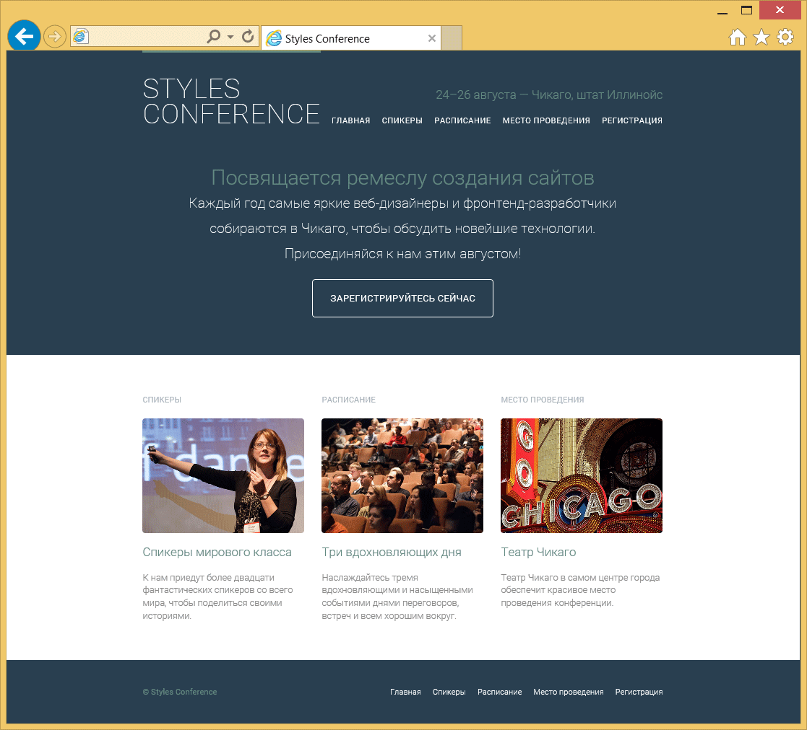
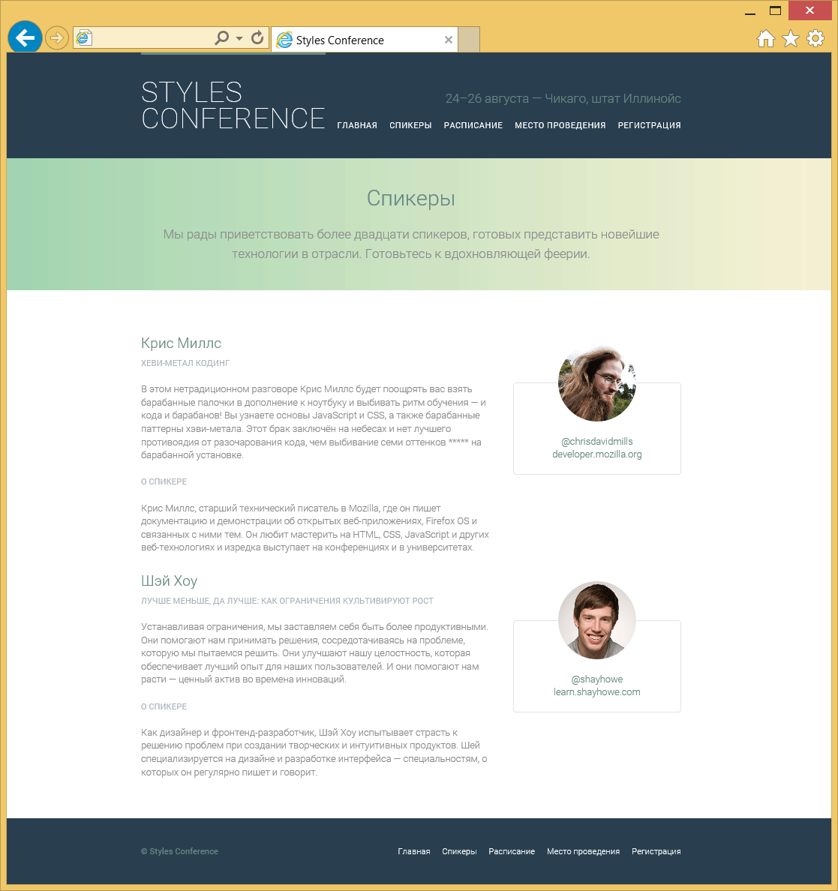
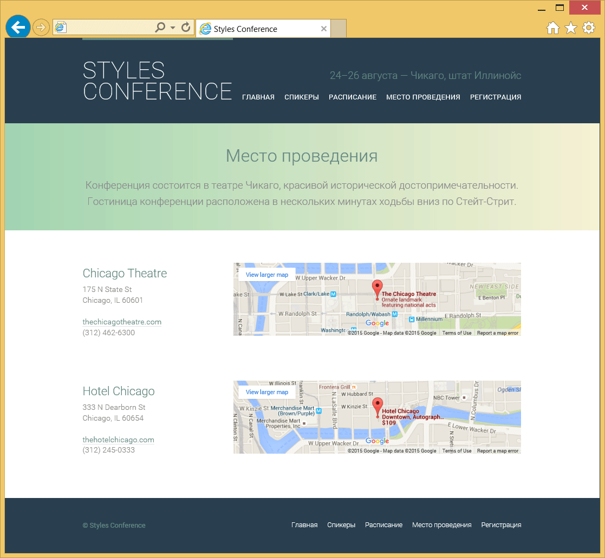

Добавление медиа-контента
Мы просматриваем Интернет в поисках интересной и познавательной информации, которую обычно находим в виде простого текста. Для его сопровождения HTML предлагает способы внедрить мультимедиа в виде изображений, аудио и видео, а также включить контент с другой веб-страницы в виде встроенного фрейма.
Возможность включать изображения, звук, видео и встроенные фреймы на сайты существует уже некоторое время. Браузеры поддерживают изображения и встроенные фреймы в целом очень хорошо. И хотя добавлять звук и видео на сайт можно уже много лет, этот процесс был довольно громоздким. К счастью, он совершенствуется и стал гораздо проще с прямой поддержкой из HTML.
Сегодня мы можем свободно использовать изображения, аудио, видео и встроенные фреймы, зная что они поддерживаются всеми основными браузерами.
Добавление изображений
Чтобы добавить изображения на страницу мы используем строчный элемент <img>. Элемент <img> относится к самостоятельным или к пустым элементам; это означает, что он не содержит какого-либо контента и существует в виде единственного тега. Для работы <img> должен быть включен атрибут src со значением, указывающим исходник изображения. Значение атрибута src это URL, обычно относительно сервера, на котором размещён сайт.
Наряду с атрибутом src должен быть применён атрибут alt (альтернативный текст), который описывает содержимое изображения. Значение атрибута alt собирают поисковые системы и вспомогательные технологии, это помогает им донести назначение изображения. Альтернативный текст будет отображаться вместо изображения, если по какой-то причине изображение не доступно.
<img src="dog.jpg" alt="Чёрно-бело-коричневая собака с надетым на неё платком">Демонстрация добавления изображения
Рис. 9.01. Альтернативный текст показан на месте отсутствующего изображения
Поддерживаемые форматы изображений
Изображения поступают в разных форматах файлов и каждый браузер может поддерживать (или не поддерживать) различные форматы. По большому счёту, наиболее типовые поддерживаемые форматы изображений в Интернете — это gif, jpg и png. Из них наиболее широко используемыми сегодня форматами являются jpg и png. Формат jpg обеспечивает качество изображения с высоким количеством цветов, сохраняя скромный размер файла, идеально подходящего для быстрой загрузки. Формате png отлично подходит для изображений с прозрачностью или малым числом цветов. Мы обычно видим что изображения в jpg используются для фотографий, а изображения в png — для иконок или фоновых узоров.
Размеры изображений
Важно определить размер изображения, чтобы сказать браузеру, насколько большой должна быть картинка до загрузки страницы. Таким образом браузер может зарезервировать место для изображения и отображать страницы быстрее. Есть несколько разных способов задать размер изображений, которые хорошо работают на странице. Одним из способов является использование атрибутов width и height непосредственно в теге <img> в HTML.
Кроме того, для указания размеров изображения могут быть использованы свойства width и height в CSS. Когда одновременно применяются свойства CSS и атрибуты HTML, то свойства CSS будут иметь приоритет над атрибутами HTML.
Указание только ширины или высоты настроит другой размер автоматически, чтобы сохранить пропорции изображения. В качестве примера, если мы хотим, чтобы изображение было 200 пикселей в высоту, но ширина нас не особо беспокоит, то мы можем установить height как 200 пикселей, а ширина изображения подстроится соответственно. Одновременная установка width и height также будет работать, однако это может нарушить пропорции изображения, в результате чего появятся искажения.
img {
height: 200px;
width: 200px;
}Демонстрация размеров изображения
Хотя с помощью атрибутов width и height непосредственно в HTML сохраняется некоторое смысловое значение в виде исходного размера изображения, может быть трудно управлять множеством изображений одинакового размера. В таком случае обычной практикой будет использование CSS для изменения размеров изображений.
Позиционирование изображений
Мы можем использовать ряд разных подходов для позиционирования изображений на веб-странице. По умолчанию изображения позиционируются как строчно-блочные элементы, однако их положение может быть изменено с помощью CSS, в частности, float, display и свойств блочной модели, включая padding, border и margin.
Строчное позиционирование изображений
Элемент <img> является по умолчанию строчно-блочным. Добавление изображения на страницу без каких-либо стилей будет позиционировать его на той же строке, что и содержимое вокруг изображения. Кроме того, изменится высота строки, в которой появляется изображение, чтобы соответствовать высоте изображения и это может создать большие вертикальные зазоры в строке.
<p>Гэтсби — чёрно-бело-коричневая дворняга, которая любит вой пожарных машин и когда ему чешут пузо.
<img src="dog.jpg" alt="Чёрно-бело-коричневая собака с надетым на неё платком">
Несмотря на то, что он большую часть времени спит, он очень быстро гоняется за любыми птицами, которых видит во сне.</p>Демонстрация строчного изображения
Оставлять изображения позиционированными по умолчанию приходится редко. Чаще изображения отображаются как блочные или обтекаемые по одной стороне элементы.
Блочное позиционирование изображений
Добавив свойство display к изображению и установив его значение как block мы заставим изображение быть блочным элементом. Это отображает изображение на отдельной строке, что позволяет окружающему содержимому располагаться выше и ниже изображения.
img {
display: block;
}Демонстрация блочного изображения
Позиционирование изображений слева или справа
Иногда вывод изображения как строчного, блочного или, возможно, даже строчно-блочного элемента не является идеальным. Мы можем сделать так, чтобы изображение появилось на левой или правой стороне содержащего его элемента, в то время как другое содержимое обтекало вокруг изображения при необходимости. Чтобы сделать это, мы используем свойство float со значением left или right.
Возвращаясь обратно к уроку 5, «Позиционирование содержимого», напомним, что свойство float первоначально предназначалось для размещения изображений слева или справа в содержащем их элементе. Теперь мы используем его для этой изначальной цели.
Обтекание изображения это начало, всё остальное содержимое будет выравниваться непосредственно напротив. Для обеспечения пространства вокруг изображения мы воспользуемся свойством margin. Дополнительно мы можем применить свойства padding, border и background чтобы создать рамку вокруг изображения по желанию.
img {
background: #eaeaed;
border: 1px solid #9799a7;
float: right;
margin: 8px 0 0 20px;
padding: 4px;
}Демонстрация обтекаемого изображения
Когда использовать изображения вместо фоновой картинки
Есть два основных способа добавления изображения на веб-страницу. Описанный здесь способ — это использование элемента <img> в HTML. Другой способ заключается в применении свойства background или background-image в CSS и назначении фонового изображения для элемента. Оба варианта выполняют свою работу, но у каждого есть свои конкретные области применения.
Элемент <img> в HTML является предпочтительным вариантом, когда изображение должно сохранять смысловое значение и имеет отношение к содержанию страницы.
Свойство background или background-image в CSS является предпочтительным вариантом, когда изображение используется как часть дизайна или интерфейса на странице. Как таковое, оно напрямую не связано с содержанием страницы.
Элемент <img> является довольно популярным и когда был первоначально добавлен в спецификацию HTML, то навсегда изменил путь создания сайтов.
На практике
Теперь, когда мы знаем как добавить и позиционировать изображения на странице, давайте взглянем на наш сайт Styles Conference и посмотрим, куда мы можем вставить несколько изображений.
Начнём с добавления нескольких изображений на нашу главную страницу. В частности, мы добавим изображение в каждый раздел с тизером, продвигающих некоторые наши страницы.
Прежде, чем мы перепрыгнем к коду, давайте создадим новую папку с названием images в нашей папке assets. Затем, в папке images создадим другую папку с названием home специально для изображений нашей главной страницы. В папку home мы добавим три изображения: speakers.jpg, schedule.jpg и venue.jpg (для справки, эти изображения можно скачать из zip-файла).
Далее, в нашем файле index.html, каждый раздел с тизером содержит элемент <a>, который одновременно обёртывает элементы <h3> и <h5>. Переместим элемент <h5> выше элемента <a> и заменим его элементом <img>. Значение атрибута src для каждого элемента <img> будет соответствовать структуре папок и имени созданного файла, а значение атрибута alt будет описывать содержание каждого изображения.
HTML для нашего первого тизера со спикерами будет выглядеть следующим образом:
<section class="teaser col-1-3"> <h5>Спикеры</h5> <a href="speakers.html"> <img src="assets/images/home/speakers.jpg" alt="Профессиональные спикеры"> <h3>Спикеры мирового класса</h3> </a> <p>К нам приедут более двадцати фантастических спикеров со всего мира, чтобы поделиться своими историями.</p> </section>Продолжим этот шаблон также для тизеров расписания и места проведения.
Теперь, когда мы добавили несколько изображений на нашу страницу, нам нужно немного очистить их стили и убедиться, что они правильно вписываются в макет нашей страницы.
Так как изображения по умолчанию являются строчно-блочными элементами, давайте изменим изображения в разделе с тизерами на блочные элементы. Также установим их максимальную ширину как 100%, чтобы гарантировать, что они не превышают ширину соответствующих им колонок. Изменение значения этой ширины важно, поскольку она позволяет нашим изображения подстраиваться под ширину колонок по мере необходимости.
Наконец, давайте немного скруглим углы изображений и применим к ним нижний margin 22 пикселя, обеспечивая небольшую свободу.
После того, как мы добавим эти новые стили к нашим существующим стилям для главной страницы (с помощью класса teaser в качестве отборочного селектора для элементов <img>), наш CSS будет выглядеть следующим образом:
.teaser img { border-radius: 5px; display: block; margin-bottom: 22px; max-width: 100% }Затем добавим изображения всех спикеров на странице Спикеры. Мы начнём с создания папки speakers в нашей папке images и поместим в неё изображения всех выступающих.
В файле speakers.html добавим элемент <img> внутрь каждого элемента <aside> с информацией о спикере. Разместим каждый элемент <img> внутри элемента <div> со значением speaker-info у атрибута class, чуть выше элемента <ul>.
Значение атрибута src каждого изображения будет соответствовать папке speakers, которую мы создали и имени спикера; значением атрибута alt будет имя спикера.
Элемент <aside> для меня как спикера будет выглядеть следующим образом:
<aside class="col-1-3"> <div class="speaker-info"> <img src="assets/images/speakers/shay-howe.jpg" alt="Шэй Хоу"> <ul> <li><a href="https://twitter.com/shayhowe">@shayhowe</a></li> <li><a href="http://learn.shayhowe.com/">learn.shayhowe.com</a></li> </ul> </div> </aside>Этот же шаблон добавления изображения следует применить ко всем другим спикерам.
Как мы делали с изображениями на нашей главной странице, так же мы хотим применить некоторые стили для изображений на странице Спикеры.
Начнём с применения свойства border-radius со значением 50%, превращая наши изображения в круги. Отсюда установим фиксированную высоту 130 пикселей для каждой картинки и зададим вертикальное выравнивание по верху строки, в которой они находятся.
После этого применим к изображениям вертикальные отступы. Используя отрицательный margin сверху в 66 пикселей мы вытянем немного изображения из элемента <aside> и выровняем по центру верхней границы элемента <div> с классом speaker-info. Далее, применение margin как 22 пикселя к нижней части изображения обеспечивает пространство между изображением и элементом <ul> ниже него.
После того, как мы добавим эти новые стили к нашим существующим стилям страницы Спикеры (с помощью класса speaker-info в качестве отборочного селектора для элементов <img>), наш CSS будет выглядеть следующим образом:
.speaker-info img { border-radius: 50%; height: 130px; margin: -66px 0 22px 0; vertical-align: top; }Поскольку мы используем агрессивный негативный margin для элемента <img> внутри элемента <div> с классом speaker-info, мы должны убрать padding сверху у этого элемента <div>.
Ранее мы использовали свойство padding со значением 22px 0, таким образом указали 22 пикселя padding сверху и снизу и 0 пикселей padding слева и справа у элемента <div>. Давайте заменим это свойство и значение на свойство padding-bottom, так как нам нужно определить только этот padding и используем значение 22 пикселя.
Новый набор правил для класса speaker-info выглядит следующим образом:
.speaker-info { border: 1px solid #dfe2e5; border-radius: 5px; margin-top: 88px; padding-bottom: 22px; text-align: center; }
Теперь главная страница и страница Спикеры выглядят весьма круто.

Рис. 9.02. Главная страница Styles Conference после добавления изображений в каждый раздел с тизером

Рис. 9.03. Страница Спикеры после добавления изображения для каждого спикера
Добавление аудио
HTML5 предлагает быстрый и простой способ добавить аудиофайлы на сайт через элемент <audio>. Как и элемент <img>, элемент <audio> принимает URL исходника, указанного в атрибуте src. При этом, в отличие от элемента <img> элемент <audio> требует открывающий и закрывающий теги, которые мы обсудим в ближайшее время.
<audio src="jazz.ogg"></audio>Атрибуты <audio>
Несколько других атрибутов могут сопровождать атрибут src для элемента <audio>, наиболее популярные это autoplay, controls, loop и preload.
Атрибуты autoplay, controls и loop — логические атрибуты и не требуют наличия значения. Вместо этого, когда каждый присутствует в элементе <audio>, значение атрибута будет установлено истинным и элемент <audio> будет вести себя соответственно.
По умолчанию, элемент <audio> не отображается на странице. Если присутствует логический атрибут autoplay, на странице ничего не появится, но аудиофайл начнёт воспроизводиться автоматически после загрузки.
<audio src="jazz.ogg" autoplay></audio>Для отображения элемента <audio> на странице необходим логический атрибут controls. Когда он применяется к элементу <audio> браузер покажет элементы управления по умолчанию, включая воспроизведение, паузу, поиск и регулировку громкости.
<audio src="jazz.ogg" controls></audio>Демонстрация добавления аудио
При наличии логического атрибута loop для элемента <audio> аудиофайл будет повторяться постоянно, с начала и до конца.
Наконец, атрибут preload для элемента <audio> помогает определить, какая информация об аудиофайле, если она есть, должна быть загружена до воспроизведения клипа. Он принимает три значения: none, auto и metadata. Значение none не загружает никакой информации об аудиофайле, в то время как значение auto загрузит всю информацию об аудиофайле. Значение metadata располагается между значениями none и auto и загрузит все доступные сведения об аудиофайле, например, длину клипа, но не всю информацию.
Если атрибут preload не представлен в элементе <audio>, вся информация об аудиофайле будет загружена, словно значение было установлено как auto. По этой причине использование атрибута preload со значением metadata или none — хорошая идея, когда аудиофайл не является необходимым для страницы. Это поможет не загружать канал и позволит странице загружаться быстрее.
Альтернатива аудио и несколько источников
В настоящее время разные браузеры поддерживают различные форматы аудиофайлов, тремя наиболее популярными из которых являются ogg, mp3 и wav. Для лучшей поддержки браузерами нам нужно использовать несколько аудиофайлов, которые будут включены внутри открывающего и закрывающего тегов элемента <audio>.
Для начала мы удалим атрибут src из элемента <audio>. Вместо этого мы воспользуемся элементом <source> с атрибутом src, вложенный в элемент <audio>, чтобы определить новый исходник.
Используя элемент <source> и атрибут src для каждого формата файла, мы можем перечислить один аудиофайл за другим. Мы будем использовать атрибут type, который поможет браузеру быстро определить, какие типы аудио доступны. Когда браузер распознает формат аудиофайла, он загрузит файл и проигнорирует остальные.
Поскольку элемент <audio> был представлен в HTML5, некоторые браузеры его не поддерживают. В этом случае мы можем предложить ссылку для скачивания аудиофайла после любого элемента <source> внутри <audio>.
<audio controls>
<source src="jazz.ogg" type="audio/ogg">
<source src="jazz.mp3" type="audio/mp3">
<source src="jazz.wav" type="audio/wav">
Пожалуйста, <a href="jazz.mp3" download>скачайте</a> аудиофайл.
</audio>Рассмотрим предыдущий код. Элемент <audio> включает логический атрибут controls, что гарантирует отображение аудиоплеера в браузерах, которые поддерживают этот элемент. <audio> не включает атрибут src, а вместо этого содержит три разных элемента <source>. Каждый элемент <source> включает в себя атрибут src указывающий на разный формат аудиофайла и атрибут type, который определяет формат аудиофайла. Последняя строка дана в качестве резерва — если браузер не распознает ни один из форматов аудиофайлов, будет показана ссылка на скачивание.
В дополнение к элементу <audio>, HTML5 также представил элемент <video>, у которого есть довольно много сходства с <audio>.
Добавление видео
Добавление видео в HTML5 очень похоже на добавление аудио. Мы используем элемент <video> на месте элемента <audio>. Все те же атрибуты (src, autoplay, controls, loop и preload) и альтернативы применимы и здесь.
Для элемента <audio> характерно, что если логический атрибут controls не указан, то аудиоклип не отображается. Для видео, если атрибут controls не указан, то видео будет показано. Однако, его довольно трудно посмотреть, если логический атрибут autoplay также не применяется. В целом, хорошей практикой будет включить атрибут controls, если нет серьёзной причины не позволять пользователям запускать, останавливать или повторять видео.
Поскольку видео занимает место на странице, будет полезно определить его размеры, которые чаще всего делаются через свойства width и height в CSS. Это гарантирует, что видео не окажется слишком большим и останется в пределах макета страницы. Кроме того, задание размера как и с изображениями помогает браузеру отображать видео быстрее и позволяет выделить надлежащее место, необходимое для показа видео.
<video src="earth.ogv" controls></video>Настройка управления аудио и видео
По умолчанию, управление в элементах <audio> и <video> определяются каждым браузером самостоятельно. В зависимости от дизайна сайта, может потребоваться больше власти над внешним видом медиаплеера. В этом случае плеер может быть модифицирован, но для работы потребуется немного JavaScript.
Кроме того, если модифицированный плеер использует элемент <img> в качестве управления, значение атрибута alt должно явно утверждать, что изображение предназначено для управления и требуется необходимое взаимодействие для работы.
Атрибут poster
Для элемента <video> доступен дополнительный атрибут poster. Этот атрибут позволяет задать изображение в виде URL, которое будет показано до воспроизведения видео. В приведённом ниже примере скриншот из видео используется в качестве постера для видео Земли.
<video src="earth.ogv" controls poster="earth-video-screenshot.jpg"></video>Альтернатива видео
Как и с элементом <audio>, для видео также необходим альтернативный вариант. Аналогичный формат разметки, с несколькими элементами <source> для каждого типа файла и обычный текст как альтернатива, также относится к элементу <video>.
<video controls>
<source src="earth.ogv" type="video/ogg">
<source src="earth.mp4" type="video/mp4">
Пожалуйста, <a href="earth.mp4" download>скачайте</a> это видео.
</video>Дополнительным запасным вариантом, который может быть использован вместо обычного текста, является встроенное видео YouTube или Vimeo. Эти сайты видеохостинга позволяют загрузить наши видео, предоставляют стандартный видеоплеер и возможность внедрить видео на страницу с помощью встроенного фрейма.
Форматы аудио и видеофайлов в HTML5
Поддержка браузеров для элементов <audio> и <video> меняется, как и форматы файлов, необходимых для этих элементов. У каждого браузера есть свои собственные предпочтительные форматы аудио и видеофайлов.
Существует несколько инструментов, которые помогают преобразовать аудио или видеофайл в другие форматы и быстрый поиск даёт изобилие вариантов.
Добавление встроенных фреймов
Ещё один способ добавления содержимого на страницу — это внедрить другую HTML-страницу в текущую. Это делается с помощью встроенного фрейма или элемента <iframe>. Данный элемент принимает URL другой HTML-страницы в значении атрибута src — это вызывает содержимое из внедрённой HTML-страницы для отображения на текущей странице. Значение атрибута src может быть URL относительно страницы, где появляется элемент <iframe> или абсолютным адресом для исключительно внешней страницы.
Многие страницы используют элемент <iframe> для внедрения медиа-контента на страницу с внешнего сайта, вроде Google Maps, YouTube и др.
<iframe src="https://www.google.com/maps/embed?..."></iframe>Демонстрация добавления встроенного фрейма
Элемент <iframe> содержит несколько стилей по умолчанию, в том числе border, width и height. Эти стили можно регулировать с помощью атрибутов в HTML frameborder, width и height или с помощью CSS-свойств border, width и height.
Атрибут seamless
Страницы, на которые ссылается атрибут src элемента <iframe> играют по своим правилам — так, они не наследуют любые стили или поведение со страницы, на которую указывают. Любые стили применяемые к странице с элементом <iframe> не наследуются страницей внутри элемента <iframe>. Кроме того, ссылки внутри страницы в элементе <iframe> откроются внутри фрейма, оставляя страницу, которая содержит элемент <iframe>, без изменений.
У нас будет время, когда мы захотим изменить подобное поведение и логический атрибут seamless позволит нам это сделать. Когда атрибут seamless присутствует в элементе <iframe> это разрешает стилям для страницы с элементом <iframe> наследоваться странице внутри элемента <iframe>. Кроме того, атрибут seamless позволяет ссылкам, нажатым на странице внутри <iframe>, открываться в том же окне, что и исходная страницы, содержащая элемент <iframe>.
<iframe src="contact.html" seamless></iframe>Атрибут seamless является новым атрибутом представленным в HTML5. Хотя поддержка браузеров для этого атрибута растёт, он не будет работать в старых браузерах. Рекомендуем проверить атрибут seamless перед его использованием.
На практике
Встроенные фреймы предлагают отличный способ добавления динамического содержимого на страницу. Позволим им выстрелить и обновим нашу страницу «Место проведения» некоторыми картами.
Перед добавлением любых карт или встроенных фреймов давайте сначала подготовим нашу страницу для сетки из двух колонок. Ниже раздела со вступлением мы добавим элемент <section> с классом row, чтобы определить новый раздел страницы и включить некоторые общие стили, такие как белый фон и вертикальный padding.
Непосредственно внутри этого элемента <section> добавим элемент <div> с классом grid. Класс grid выравнивает наш контент по центру страницы и готовится сопровождать колонки 1/3 и 2/3.
Пока главный раздел нашего файла venue.html выглядит следующим образом:
<section class="row"> <div class="grid"> ... </div> </section>В элементе <div> с классом grid у нас будет два новых раздела: один для места конференции, а второй для гостиницы. Добавим два новых элемента <section> и дадим каждому из них уникальный класс, который соответствует его содержанию. Мы будем использовать эти классы для добавления margin снизу каждого раздела.
Наш HTML должен выглядеть так:
<section class="row"> <div class="grid"> <section class="venue-theatre"> ... </section> <section class="venue-hotel"> ... </section> </div> </section>Теперь у нас есть несколько классов для работы, давайте создадим новый раздел в нашем файле main.css для стилей страницы «Место проведения». Мы добавим нижний margin 66 пикселей к элементу <section> с классом venue-theatre, чтобы вставить некоторое пространство между ним и элементом <section> ниже.
Затем мы добавим 22-пиксельный margin внизу элемента <section> с классом venue-hotel, чтобы обеспечить некоторое пространство между ним и элементом <footer> ниже.
Новый раздел в файле main.css выглядит следующим образом:
/* ======================================== Место проведения ======================================== */ .venue-theatre { margin-bottom: 66px; } .venue-hotel { margin-bottom: 22px; }У элемента <section> с классом venue-hotel нижний margin меньше, чем у элемента <section> с классом venue-theatre, потому что он соседствует с нижним padding от элемента <section> с классом row. Совместное добавление margin и padding даст нам то же значение, что и нижний margin для элемента <section> с классом venue-theatre.
Теперь пришло время для создания двух колонок в каждом новом элементе <section>. Мы начнём с добавления элемента <div> с классом col-1-3, чтобы установить колонку 1/3. После этого добавим элемент <iframe> с классом col-2-3, чтобы установить колонку 2/3.
Подразумевая, что колонки, сделанные элементами <div> и <iframe> — это строчно-блочные элементы, мы должны удалить пустое пространство, которое будет отображаться между ними. Для этого откроем комментарий HTML сразу после закрывающего тега <div> и закроем комментарий непосредственно перед открывающим тегом <iframe>.
В целом, наш HTML для колонок выглядит следующим образом:
<section class="row"> <div class="grid"> <section class="venue-theatre"> <div class="col-1-3"></div><!-- --><iframe class="col-2-3"></iframe> </section> <section class="venue-hotel"> <div class="col-1-3"></div><!-- --><iframe class="col-2-3"></iframe> </section> </div> </section>В каждый из элементов <div> с классом col-1-3 добавим название места внутри элемента <h2>, затем два элемента <p>. В первом элементе <p> включим адрес места проведения, а во втором <р> элемента включим их сайт (со ссылкой) и номер телефона.
Внутри каждого абзаца используем элемент перевода строки <br>, чтобы разместить разрывы в адресе и между сайтом и номером телефона.
Для элемента <section> с классом venue-theatre HTML выглядит следующим образом:
<section class="venue-theatre"> <div class="col-1-3"> <h2>Chicago Theatre</h2> <p>175 N State St <br> Chicago, IL 60601</p> <p><a href="http://www.thechicagotheatre.com/">thechicagotheatre.com</a> <br> (312) 462-6300</p> </div><!-- --><iframe class="col-2-3"></iframe> </section>Этот же шаблон показанный здесь для театра следует также применять к гостинице (с использованием, конечно же, соответствующего адреса, веб-сайта и номера телефона).
Мы можем поискать эти адреса в Google Maps. После того, как найдём адрес и создадим персональную карту, у нас есть возможность вставить эту карту на нашу страницу. Следуйте инструкциям на Google Maps о том как внедрить карту и получить HTML для элемента <iframe>.
Скопируйте HTML — элемент <iframe>, атрибут src и вставьте на нашу страницу, где расположен существующий элемент <iframe>. Мы сделаем это для каждого места, применяя два разных элемента <iframe>.
При копировании элемента <iframe> из Google Maps мы должны убедиться, что сохраняем атрибут class и значение col-2-3 в нашем существующем <iframe>. Мы также должны быть осторожны, чтобы не повредить комментарий HTML, который закрывается непосредственно перед открывающим тегом <iframe>.
Глядя прямо на <section> с классом venue-theatre, HTML выглядит следующим образом:
<section class="venue-theatre"> <div class="col-1-3"> <h2>Chicago Theatre</h2> <p>175 N State St <br> Chicago, IL 60601</p> <p><a href="http://www.thechicagotheatre.com/">thechicagotheatre.com</a> <br> (312) 462-6300</p> </div><!-- --><iframe class="col-2-3" src="https://www.google.com/maps/embed?pb=!1m5!3m3!1m2!1s0x880e2ca55810a493%3A0x4700ddf60fcbfad6!2schicago+theatre!5e0!3m2!1sen!2sus!4v1388701393606"></iframe> </section>Наконец, мы хотим убедиться, что оба элемента <iframe>, которые ссылаются на Google Maps, одинаковой высоты. Чтобы сделать это, мы создадим новый класс venue-map и применим его к каждому элементу <iframe> наряду с существующим классом col-2-3.
HTML для элемента <section> с классом venue-theatre теперь выглядит следующим образом:
<section class="venue-theatre"> <div class="col-1-3"> <h2>Chicago Theatre</h2> <p>175 N State St <br> Chicago, IL 60601</p> <p><a href="http://www.thechicagotheatre.com/">thechicagotheatre.com</a> <br> (312) 462-6300</p> </div><!-- --><iframe class="venue-map col-2-3" src="https://www.google.com/maps/embed?pb=!1m5!3m3!1m2!1s0x880e2ca55810a493%3A0x4700ddf60fcbfad6!2schicago+theatre!5e0!3m2!1sen!2sus!4v1388701393606"></iframe> </section>После того, как класс venue-map применяется к каждому элементу <iframe>, давайте создадим набор правил для этого класса в нашем файле main.css. Он включает в себя свойство height со значением 264 пикселей.
Набор правил для класса venue-map выглядит так:
.venue-map { height: 264px; }
Теперь у нас есть страница с местом проведения, в комплекте с картами для разных мест нашей конференции.

Рис. 9.04. Наша страница «Место проведения» теперь включает встроенные фреймы
Демонстрация и исходный код
Ниже вы можете просмотреть сайт Styles Conference в его нынешнем состоянии, а также скачать исходный код сайта на данный момент.
Просмотр сайта Styles Conference или Скачать исходный код
Семантическое определение figure и figcaption
С HTML5 также пришли элементы <figure> и <figcaption>. Эти элементы были созданы для семантической разметки самостоятельного содержимого или медиа-контента, обычно с заголовком. До HTML5 это часто делалось с помощью нумерованного списка и хотя такой список работал, разметка была семантически неверной.
<figure>
Блочный элемент <figure> применяется для идентификации и охватывания независимого содержимого, часто в виде медиа-контента. Он может окружать изображения, аудиоклипы, видео, блоки кода, диаграммы, рисунки или другой самостоятельный медиа-контент. Внутри <figure> одновременно может содержаться более одного независимого содержимого, вроде нескольких изображений и видео. Если элемент <figure> перемещается из основной части страницы в другое место (например, вниз страницы), это не должно нарушать содержимое или удобочитаемость страницы.
<figure>
<img src="dog.jpg" alt="Чёрно-бело-коричневая собака с надетым на неё платком">
</figure>Демонстрация <figure>
<figcaption>
Чтобы добавить подпись или пояснение к элементу <figure> применяется элемент <figcaption>. Элемент <figcaption> может появиться вверху, внизу или где-то ещё в элементе <figure>, но только один раз. Во время использования элемент <figcaption> служит заголовком для всего контента внутри элемента <figure>.
Кроме того, <figcaption> может заменить атрибут alt элемента <img>, если содержимое элемента <figcaption> предлагает полезное описание визуального содержания изображения.
<figure>
<img src="dog.jpg">
<figcaption>Красивая чёрно-бело-коричневая дворняга с надетым на неё платком.</figcaption>
</figure>Демонстрация <figcaption>
Не всякий тип медиа-контента должен быть включён в элемент <figure> или включать <figcaption>. Только тот, который является независимым и относится к одной группе.
Резюме
Наряду с текстом, медиа-контент является огромной частью Интернета. Применение изображений, аудио и видео только выросло за последние годы и это, вероятно, не замедлится. Теперь мы знаем как включить эти виды медиа-контента в наши проекты и как мы можем использовать их, чтобы обогатить содержание наших сайтов.
В этом уроке мы рассмотрели следующее:
- лучшие способы добавления на страницу изображений, аудиоклипов, видео и встроенных фреймов;
- разные способы позиционирования изображений в различных ситуациях; как обеспечить альтернативу аудио и видео для старых браузеров;
- типовые атрибуты, доступные для аудиоклипов и видео;
- атрибут seamless, который позволяет нам сделать поведение встроенных фреймов так, будто они являются частью страницы, из которой они вызываются;
- семантический способ разметить независимое содержимое, в том числе медиа-контент.
Мы выходим на финишную прямую в изучении HTML и CSS, осталось только представить несколько компонент. Следующими по списку идут формы.
Ресурсы и ссылки
- Using HTML5 audio and video на Mozilla Developer Network
- Audio HTML5 Element на Mozilla Developer Network
- Introduction to HTML5 Video на Dev.Opera
- The figure & figcaption elements на HTML5 Doctor
См. также

Все материалы сайта доступны по лицензии Creative Commons «Attribution-NonCommercial» («Атрибуция — Некоммерческое использование») 4.0 Всемирная, если не указано иное.